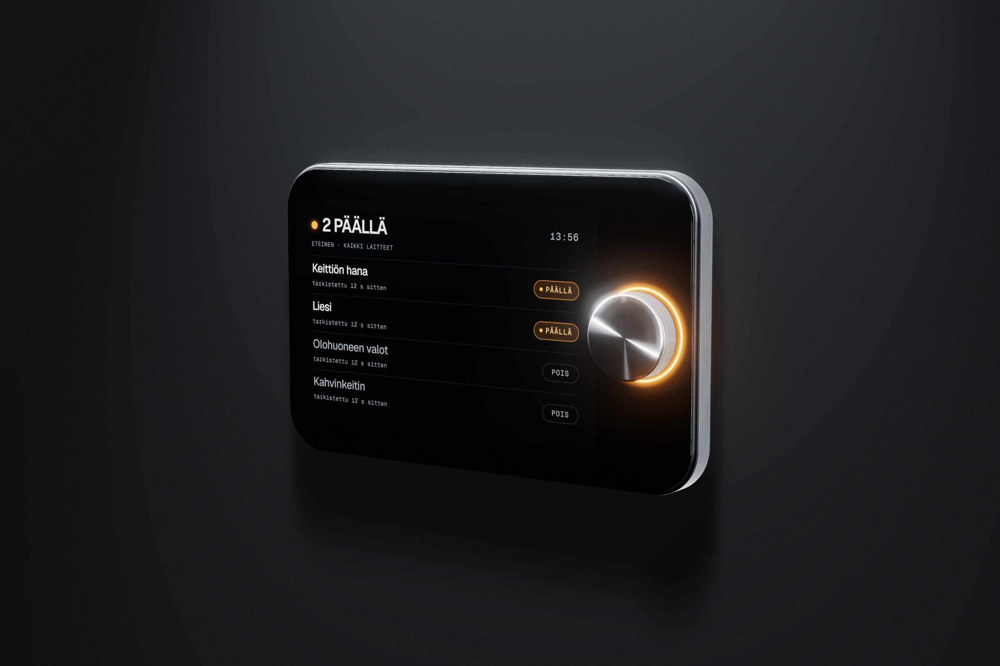

Tavallinen hana.
Hanax tietää,
onko se auki.
Lähde kotoa huoletta. Prototyyppi toimii livenä killan keittiössä.
kayttis.kiirikki.fi · Aalto-yliopisto · Käyttäjälähtöinen tuotekehitysprojekti 2026 · Ryhmä 1
HX-P · Seinäpaneeli
Konseptimalli
Konseptimalli